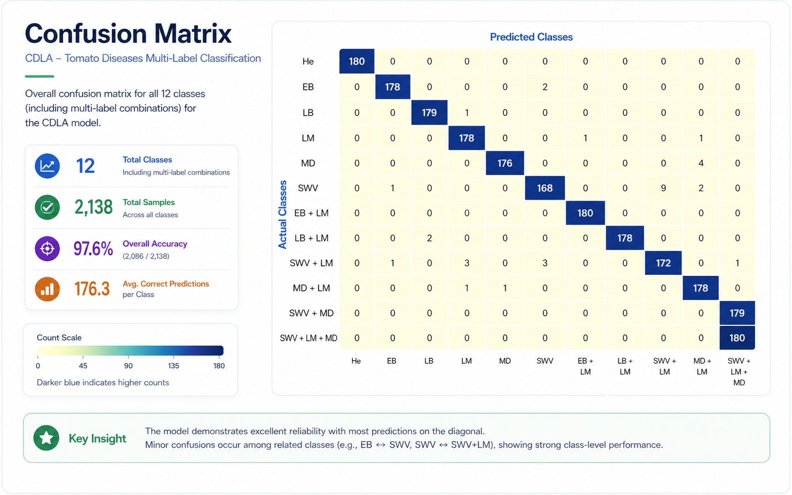
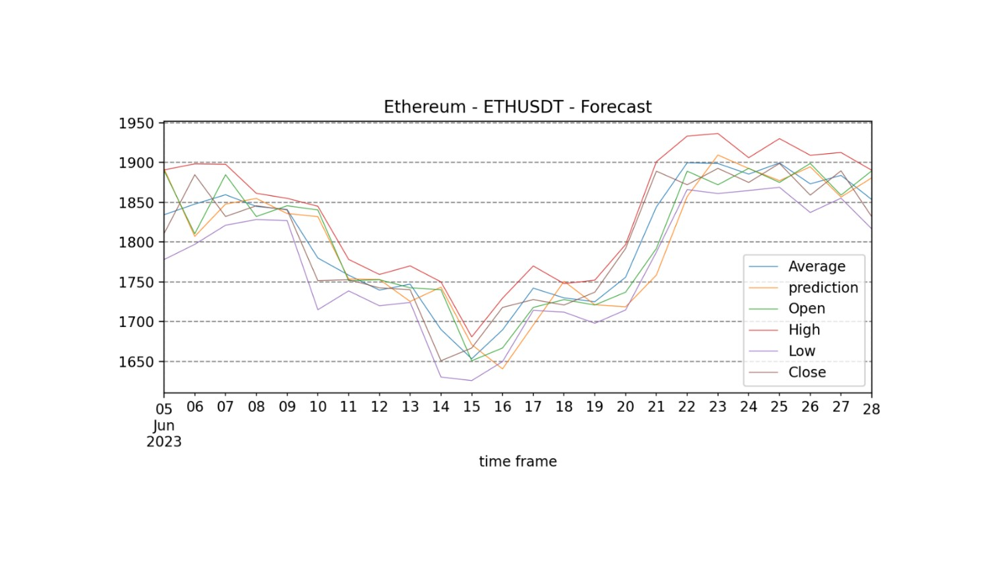

AI / Machine Learning
Experience with computer vision, time-series forecasting, deep learning workflows, dataset preparation, model evaluation, and applied AI research.
AI Product Portfolio
I turn AI research into practical product concepts with clear users, measurable outcomes, realistic roadmaps, and responsible deployment strategies. My portfolio focuses on computer vision, plant health monitoring, cryptocurrency forecasting, smart city perception, and responsible AI products.
Experience with computer vision, time-series forecasting, deep learning workflows, dataset preparation, model evaluation, and applied AI research.
Focus on problem definition, MVP planning, prioritization, roadmap design, risk analysis, and measurable product outcomes.
Portfolio projects connect AI research with practical use cases in precision agriculture, FinTech forecasting, and smart city vision systems.
Portfolio
Selected AI product case studies showing how research, user needs, technical feasibility, and product strategy can be connected into realistic product concepts.

Main case study
A computer vision product case study based on doctoral research in plant disease detection. The platform is designed to support multi-label plant disease classification, affected-area analysis, object localization, and field-oriented plant health monitoring.

FinTech AI case study
A risk-aware AI product case study based on a dissertation prototype and related IEEE publication. The product helps users analyze crypto market data, generate forecasts, and test strategies safely.

Smart city AI case study
A computer vision product case study based on an in-press paper on compact semantic segmentation for urban street scenes and smart city perception systems.
Capabilities
Product discovery, MVP definition, roadmap planning, MoSCoW / RICE prioritization, user journeys, product requirements, success metrics, and risk analysis.
AI product lifecycle, model evaluation, responsible AI, risk mitigation, human-in-the-loop validation, data strategy, and deployment feasibility.
Computer vision, deep learning, semantic segmentation, time-series forecasting, multi-label classification, CNN/LSTM/GRU architectures, model comparison, performance metrics, dataset preparation.
GitHub Pages, technical documentation, research communication, Agile workflows, product case studies, and structured product documentation.
Research Foundation
My portfolio is grounded in doctoral research on compact deep learning architectures for multi-label plant disease classification, earlier research on cryptocurrency forecasting with deep neural networks, and in-press work on smart city semantic segmentation. The research addresses multiple applied AI problems: detecting co-occurring plant health conditions, forecasting volatile cryptocurrency time series, and segmenting urban street scenes for smart city systems.
The work includes dataset preparation, model design, comparison with transfer-learned CNN models, analysis of model size and inference time, and evaluation using multi-label metrics. I also explore time-series forecasting, financial analytics, semantic segmentation, smart city vision systems, and risk-aware AI decision-support products.
About
I am an AI Product Manager candidate with a strong research background in computer vision, time-series forecasting, and applied artificial intelligence. My work focuses on transforming deep learning research into practical product concepts with clear users, measurable outcomes, and realistic deployment strategies.
My doctoral research explores compact deep learning architectures for multi-label plant disease classification, with a focus on accuracy, efficiency, and real-world deployment potential. I am especially interested in AI products that combine technical feasibility with user value, responsible AI practices, and measurable impact.
I am currently building a portfolio focused on AI product strategy, computer vision applications, FinTech forecasting tools, smart city vision systems, and responsible applied AI products.